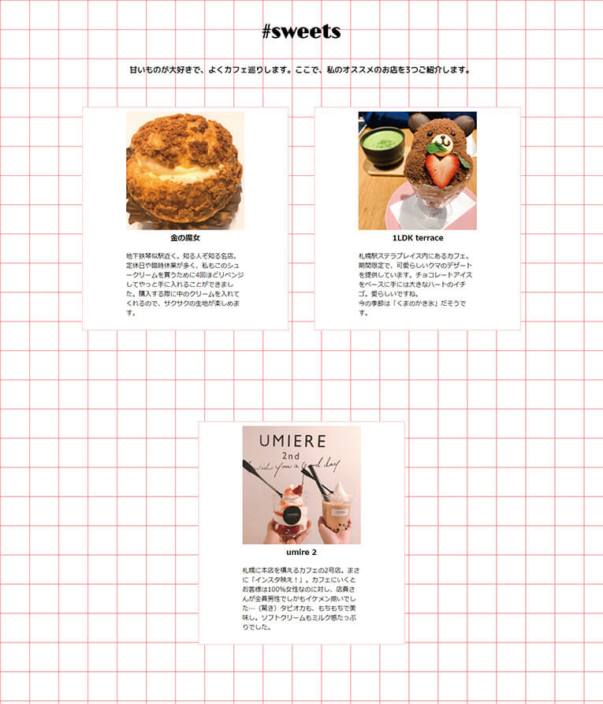
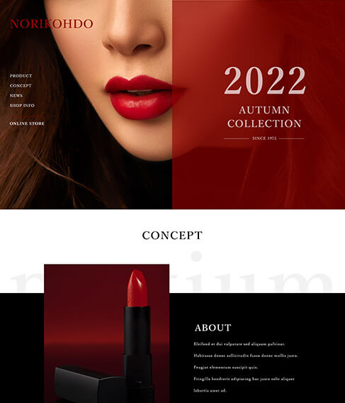
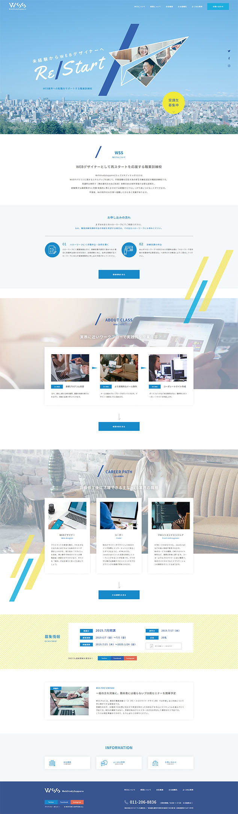
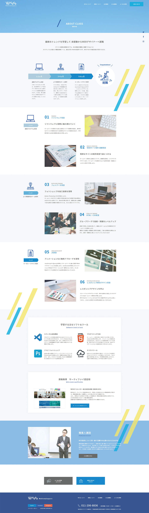
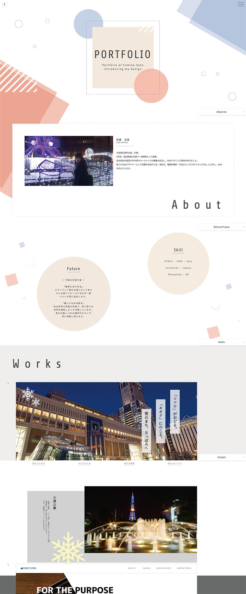
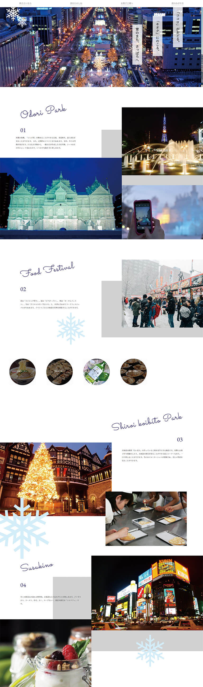

Learning Reality
学習のリアル
パソコン業務未経験の方でも、Web関連の職務に就職できるように
カリキュラムを組んだ職業訓練コース。進化の早いWebの業界ですが、WSSではその最先端を学習できます。
また、説明会を随時開催しておりますので下部の連絡先よりお気軽にご連絡ください。
Learning
学べること
各種プログラミング言語
プログラミングの基礎を学びコーダー、フロントエンドエンジニアを目指す
Webサイトの構築に要なHTML、CSS、Javascript・JQuery、RWD（レスポンシブウェブデザイン）、Sass（scss）・Gitなどの導入方法まで学習します。レスポンジブルに対応したコーディングまでしっかりとお伝えしています。
デザイン＆レイアウト
デザインの基礎を学びデザイナーを目指す
デザインは「センス」が必要だと思われがちですが、デザインのセオリーを押さえておくことで誰でもデザイン力を向上・磨くことが可能です。基礎をしっかり学ぶことで、より良いレイアウトを組むことができるようになります。
テキストエディタ
実際の現場で使用されるソフトを使いより実践的に
コードを記述する際に使うソフトで、様々なエディタが存在しており、制作会社によって環境が違うのが特色です。よく使用されているのは、Microsoft Visual Studio Code、Sublimetext、Adobe Bracketsなどです。当校ではVisual Studio Codeを使用します。

その他
WSSだからこそ学べるプラスアルファの技術で就職に近づく
Quip、チャットワーク、クラウドツール制作する上でのお役立ちツールを使い、授業を進めていきます。 授業の中では取り扱いませんが、希望者にはCMS（Word Press）の課外授業も行います。CMSとはコンテンツ・マネジメント・システム（コンテンツ管理システム）の略で、専門知識がない人もWebサイトの作成・更新・運営ができるシステムのことです。その中でも特に人気の高いWord Pressを学習します。
ソフトが自宅で使える
受講期間中は有料ソフトを無料で使用可能
Photoshopなどの有料ソフトウェアのアカウントを、受講期間中、受講生に貸し出しを行っています。受講期間中は、ご自宅のパソコンでも無料で有料ソフトウェアの使用が可能となっております。
Curriculum
カリキュラム

課題制作
WSSでは、カリキュラムの中で約20前後の課題制作をします。その中で初期に作成したものをブラッシュアップしたりぺージ数を増やしたり、アレンジを加えながら、ポートフォリオの作品のひとつとして加えていただけます。

専任講師による一対一での指導
各分野でのプロフェッショナルな講師が講義以外でもマンツーマンで指導をしております。Web業界で働いていく上で必要なスキルが身につくカリキュラム以外の内容にも対応しております。

実務の流れを体験
実際の仕事に近いシチュエーションでチームでひとつのサイトを制作したり、実際にある企業または店舗のwebサイトを課題として制作します。これまでの学びを活かしデザイン・コーディング技術の成果を発表します。
Process
成長プロセスと成果
基礎学習
１ヶ月目
Web知識講習
Webサイト制作に必要なソフトや画像の仕組み、基本的なパソコンの使用方法など、６ヶ月間学習する内容の基礎の部分を学習します。またクラウドツールも使用しますので、今まで触れたことがない方でも、毎日使用することで、覚えることができます。
HTML・CSS基礎実習
Webサイトを制作する時に使用するHTML(HTML Living Standard)やCSS(CSS3)など、基礎的な技術・知識をハンズオン形式で学習します。Webサイトを制作する基礎となる大事な部分です。授業後半には、これまで学習した内容を用いた自己紹介サイトも制作します。


２ヶ月目
Webデザイン基礎実習
Adobe Photoshop CCを使用し、基本的な操作や使い方、画像編集・写真加工を学習します。Photoshopは、Webサイトの制作には欠かせないソフトです。また、Ul/UXデザインツールであるAdobe XDの基本操作も学び、Webデザイン制作実習に繋げます。
Webデザイン制作実習
Webデザイン基礎実習で学んだ事をベースに、デザインの基礎知識なども身に付けていきます。デザインについても触れながら、Webサイト制作時に必要となるワイヤーフレームの作成方法・デザインカンプの作成など、実践的に学習していきます。
応用学習
３ヶ月目
CSS設計
WSSでは、命名規則の一種であるBEM(ベム)を取り入れてコーディングが効率的にできるようCSS設計を学びます。BEMを使うと、HTMLを見ただけでスタイルが予測しやすくなったり、長期的なメンテナンス性が高くなったりと、開発スピードを上げることができます。
コーポレートWebサイト実習
これまで学習した内容を用いて、グループワークを行います。学校側が模擬的に案件を依頼し、グループ毎に一つのWebサイトを企画からデザイン・コーディングまで手がけ、プレゼンを行います。様々な、問題点を解決しながら、技術・知識共に更にレベルアップしていきます。

４ヶ月目
JS実習
javaScript(jQuery)を使用してホームページに動く要素(スライドショーßなど)やWebアプリケーションを追加する方法を、基本から応用まで実践的に制作しながら学習します。アニメーションなど動的な要素を加えることができるので、デザイン表現の幅を広げることができます。
Sass(SCSS)
Sass(SCSS)という拡張機能(メタ機能)の導入方法・基本的な使い方など学習します。Sass(SCSS)とは、CSSを効率よくコーディングするための拡張言語（メタ言語）です。ファイルを複数に分割することが出来るので、チームや管理・運用業務に重宝します。


制作実習
５ヶ月目
レスポンシブWebデザイン
基礎実習
スマートフォンやタブレットなど、さまざまな端末に対応したマルチデバイスなWebサイト(レスポンシブWebデザイン)制作を学習します。レスポンシブWebデザイン基礎実習では、マルチデバイスの特性を理解し、メディアクエリ・ブレイクポイントなど基本を学習し、技術と知識を習得します。
レスポンシブWebデザイン
制作実習
就職活動に必須アイテムとなっているポートフォリオ(作品集)サイトを、レスポンシブとなるよう(マルチデバイス対応)設計・制作します。学んできた事をアピールできる作品でもあるので、技術を最大に生かせるよう、コンセプトからデザイン・コーディングまで仕上げていきます。
６ヶ月目
Webサイト企画・デザイン企画
実際にある企業またはお店のWebサイトを、模擬的な案件として制作します。企画・デザインからコーディングまで行うことで仕事に近い感覚で流れを理解することができます。Webサイト企画・デザイン実習では、企画・情報設計、デザイン還付などを作成します。
Webサイト制作実習
Webサイト制作実習では、Webサイト企画・デザイン実習内で制作したデザインカンプをもとにコーディング作業に取り組みます。6カ月間の集大成でもありますので、訓練終了までに、完成させることを目指します。成果物は就職活動で使用できます。
